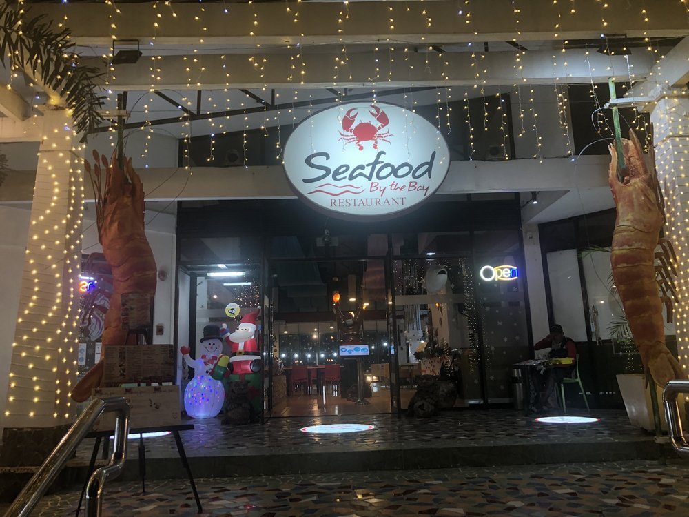
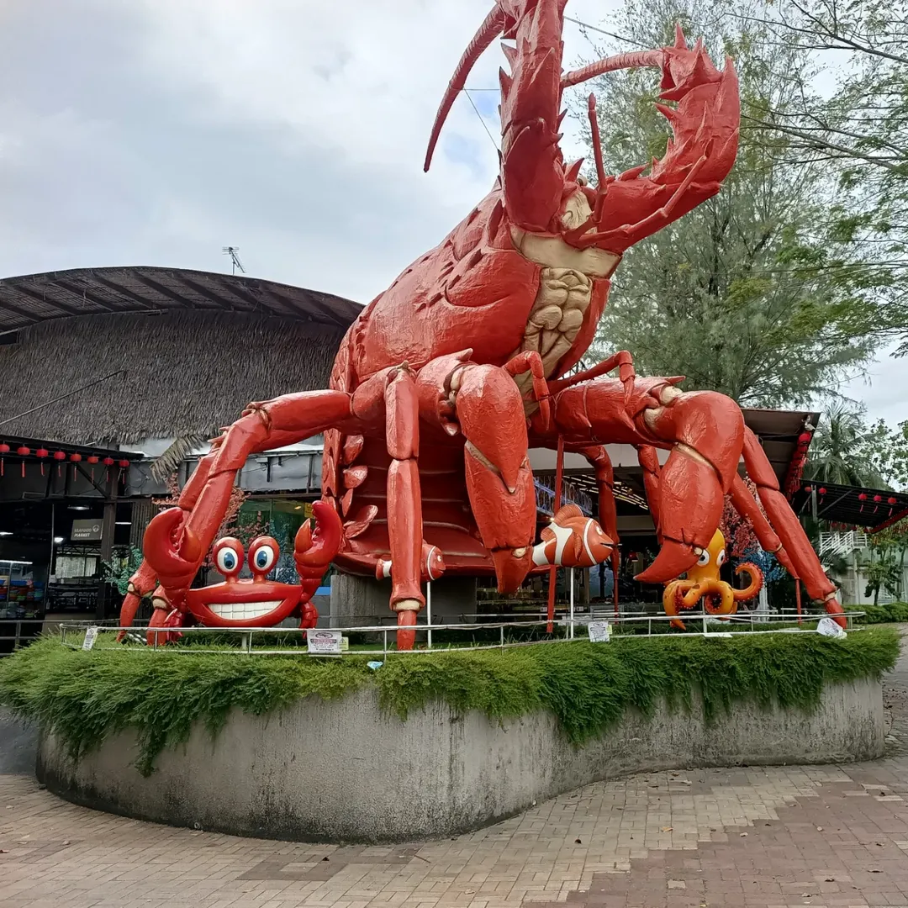
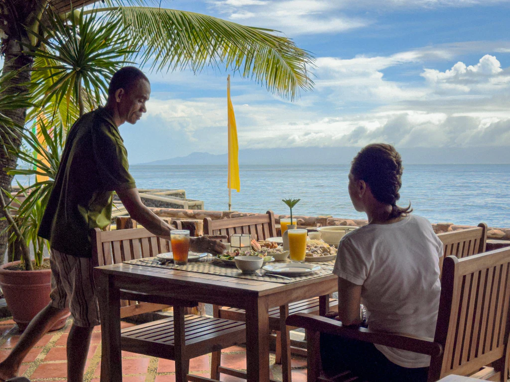
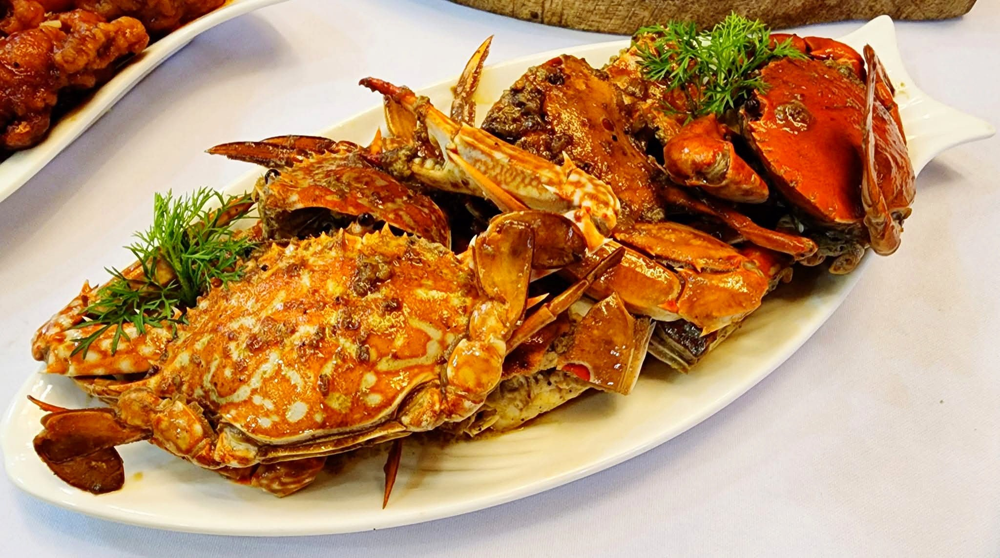

Enjoy fresh seafood dishes in Albay, from grilled fish to coastal specialties, perfect for food lovers and visitors.
Albay offers a variety of seafood dishes thanks to its coastal location. Visitors can enjoy fresh fish, shrimp, crabs, and other seafood cooked in traditional and modern styles.

A popular seafood spot where visitors can enjoy fresh grilled fish, shrimp, and other seafood with a relaxing coastal view.

A seafood restaurant offering delicious meals and a great view, perfect for families and groups.

A great place to enjoy seafood dishes cooked fresh and served in a relaxing seaside environment.

A simple seafood dining spot where visitors can enjoy affordable and tasty seafood dishes.

Known for its fresh daily seafood, this place offers delicious meals perfect for seafood lovers.
A budget-friendly seafood spot where visitors can enjoy grilled dishes and local seafood favorites.